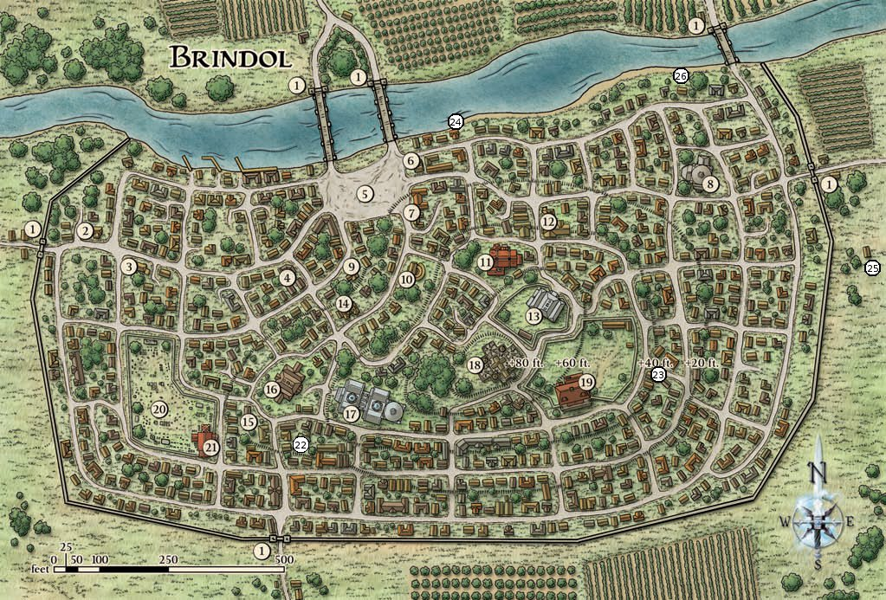
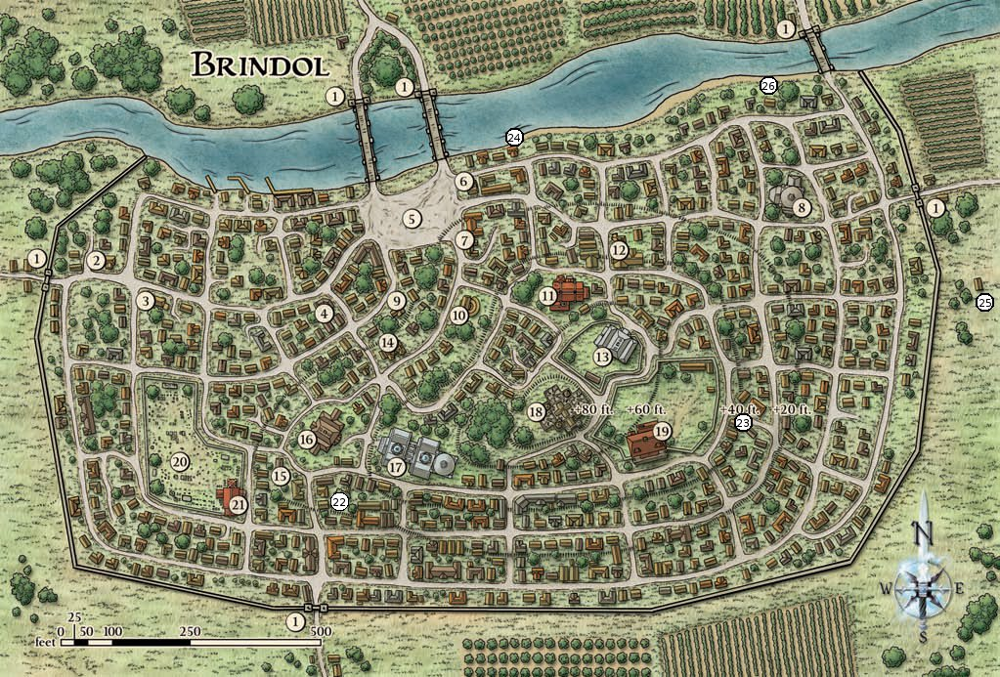
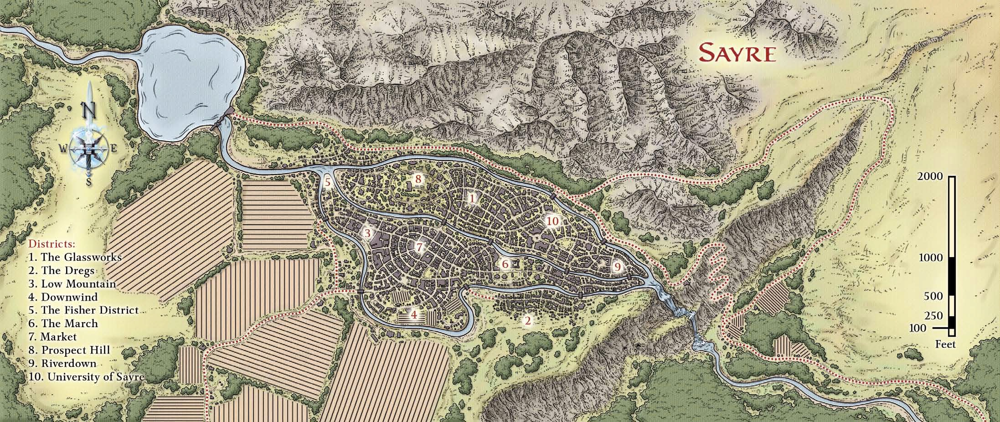
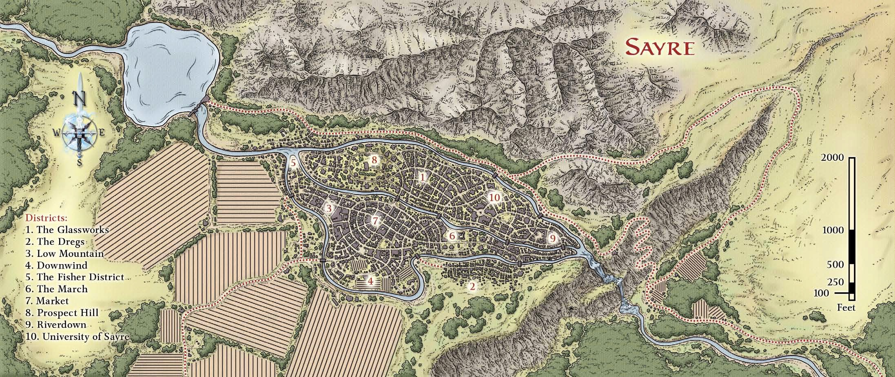

Sayre is an artistic, monument-filled city built in a particularly
beautiful valley. Sayre holds a university and
a large number of artisans, making it a popular site for
those who deal in either information or fine art.
Population:
Approximately 12,000, including
almost 1,500 students attending the University. Most
inhabitants are human, elf, eladrin, or halfling. Some
dwarves also live in Sayre, although they tend to keep
to themselves.
Government:
Sayre is governed by Lord Divian
Torrance, a politically astute nobleman adept at playing
different factions of the city against each other.
Power resides with Lord Torrance, as well as the Artisan's
Guild and the University's archdean.
Defense:
The Guards of the March are a force of
100 soldiers led by General Alvro Taramin that have
little to do other than patrol the safer sections in and
around the city. Most merchants, guilds, and noble
families have their own mercenary guards that protect
their property and work together when danger
appears. In a time of crisis, General Taramin has the
authority to call on any house with its own private
guard to cede command of their troops directly to
him. Fortunately, he has never had to do so, but if he
were, he could call over 2,000 troops. With a cliff, a
lake, and steep hills protecting three sides of Sayre, the
Guards of the March spend much of their time outside
the city patrolling the farming areas to the west.
Inns and Taverns:
Caperly's Dancehall; Firetree
Inns and Taverns:
Caperly's Dancehall; Firetree
Alehouse; the Rat and Hammer Inn; the Singing
River Inn; the Sodden Mage tavern; The Tankard of
Ink tavern. The River Jewel in The Glassworks is the
most expensive inn in the city, and the Inn of the Ugly
Dog in the Dregs is the cheapest.
Supplies:
The Market; the Glassworks; Low Mountain.
The Market District is the home of hundreds of
different vendors of almost any product conceivable,
although not all are legitimate. The Glassworks is home
to the city's finest artists and artisans, and is the place to
go if you're looking for jewelers or sculptors. Low Mountain
is home to most of Sayre's dwarves, and hidden
weaponsmiths and armorers are available to anyone
who can gain a prior recommendation from a dwarf.
Temples:
Bright Forge (Moradin); Covet House
(Tiamat, hidden); the Founding Tower (Erathis); Great
Hall (Ioun); Shrine of the Singing Waters (Corellon);
the Waypoint (Avandra).
Sayre Districts
The Fisher District
Located at the northern tip of the city, this low-lying
area is prone to floods during the spring rains. Fishermen
and fishmongers who live here ply the lake for
their trade and live in raised huts. It's possible to buy
fish in the market district, but the freshest fish can
be bought by those brave enough to come north up
muddy streets and buy the catch coming off the boats.
There isn't much crime in the Fisher District; most
fishermen have large families, and they police their
own neighborhood with stout clubs and many friends.
Interestingly, this is the one neighborhood that isn't
defined by the breaks of the river. Fishermen live on
both outer shores and both inner ones, crossing the
rivers in small boats or over swaying rope bridges.
Ketch's Catch: This small fish stand has a reputation
for bringing in some of the largest, tastiest
fish in the lake. More importantly, the stall is run by
Gloriana Ketch. She makes a business of tracking city
gossip while her husband is off fishing, and she's a
good source for anyone who wants to know the latest
city rumors about the nobles or anyone of importance.
Prospect Hill
This residential neighborhood holds the majority of
the city's grand estates and mansions. Flanked by
rivers on either side, the low hill rises gradually over
the rest of Sayre. This neighborhood was the heart
of the ancient City of Seers. All the richest citizens
of Sayre live here. There is virtually no crime here,
and private mercenary units ensure that the neighborhood
stays safe. Unsavory types moving through
Prospect Hill should expect to be challenged several
times, especially after dark.
The Pillar of Hope Reborn:
This ostentatious
memorial is a 60-foot-tall pillar with an eternal, magical
flame atop it. According to the plaque this marks
the spot of "Auglos the Wise's tower in Auger, first
founder of the city that became Sayre." It's not particularly
accurate, being located almost 200 feet from
Telicanthus's mansion and the actual site of the tower,
but it's a good meeting spot for young couples on
Prospect Hill who wish to go courting after dark. The
beggars of Sayre have a yearly competition, awarding
50 gp to anyone of their ilk who can surreptitiously
climb the pillar and extinguish the flame. Guardsmen
usually find crippled and dead beggars under
the pillar for weeks afterward.
Telicanthus's Mansion:
Marked by gate pillars
boasting lanterns made from exquisitely blown glass,
this mansion was bought by Telicanthus and renovated
after the former owner moved south. It's one of
the social epicenters of Prospect Hill, and servants
and guests enter and exit it during most daylight
hours (or later, if Telicanthus is hosting a party.) A
competent and wily butler (Telicanthus's sociopathic
servant Pennel) monitors all guests and stops anyone
who doesn't belong. Telicanthus's guards are notably
polite as they escort interlopers off the property.
Unlike other parts of the city, none
of General Taramin's city militia come within three
blocks of Telicanthus's home.
The Glassworks
This neighborhood on the eastern edge of Prospect
Hill is home to the city's artists. Sayre attracts many
of the finest craftsmen to this area. The wide roads
are lined with shops and stores, and are roughly
grouped by type of business. Businesses selling expensive
goods, such as goldmakers and jewelers, typically
have their own security. There's an atmosphere of
camaraderie in the Glassworks, and in the event of
trouble, all locals pitch in to solve the problem. Many
artists and shop owners live in apartments located
over their stores.
The River Jewel:
This is one of the finest inns
in the entire city, with superb service and prices to
match. Rooms are large, secure, beautifully decorated,
and extremely comfortable. The staff offers
any amenity a guest might want, and will send out
for food or items not offered in-house, and the chefs
are renowned for truly delicious meals. Rooms here
cost 15 gp a night, an outrageous amount compared
to other inns in the city, but rooms seldom go empty.
The Rose Window:
This shop carries only the
finest stained glass and sculpted crystal. Bando Hammerglass
is as knowledgeable a dwarven craftsman
as you can find, and can usually identify a stained
glass window's craftsman if the individual is famous
enough. He charges high prices for high quality art, but
is happy to talk to visitors.
The University of Sayre:
Founded by a priestess of Ioun who was appalled with
the lack of learning among most people she met, the
university is a bustling school of higher learning that
teaches everything from agriculture to esoteric magical
theory. Students tend to be young and from out of
town, as the university recruits the best and brightest
from many different areas. The university is often
viewed as an excellent finishing school for noble sons
and daughters, and it isn't uncommon for loyal servants
to be seen dragging their drunken masters back
home after a rowdy night in the Dregs.
The Tankard of Ink:
This is a popular tavern
for students who want to be in stumbling distance of
their rooms after drinking, and for those who don't
care for the Dregs. Many professors from the university
have adopted the tankard as their own, as well.
This is the place to come if you want a philosophical
debate instead of a fistfight.
Low Mountain
While most races have integrated nicely in Sayre,
the dwarven inhabitants tend to keep to themselves.
Low Mountain is a neighborhood of high stone walls
and twisting streets. Non-dwarves have trouble finding
places in Low Mountain, as none of the streets
are labeled, and none of the buildings are numbered
or named. As they say, "If you need to know where
you are in Low Mountain, you probably shouldn't be
there."
The area is safe, with squads formed exclusively
of dwarven guards patrolling the streets after
nightfall, but it's not particularly exciting to nondwarves.
That changes if you're a dwarf, or have the
trust of one. Wonderful restaurants, clever sages,
and master craftsmen hide within the featureless
buildings. Some dwarves will accept a bribe to guide
outsiders to the right place and introduce them to the
right contact.
Deep Cartography:
This small shop contains
two dwarven brothers, Andor and Toris Scrollstone,
sages who specialize in maps and locations. Commonly
consulted by explorers into the Underdark and
merchants who have long journeys ahead of them,
the Scrollstone brothers are the people to consult if
one wishes to learn more about Sayre's undercity.
They have old maps showing what
buildings used to be where.
The Market
This is the heart of the city for everyone but the
wealthiest citizens. The streets are full of people
from all walks of life, and any non-exotic object (as
well as many exotic and rare ones) can be purchased
here. Whether you're looking for ink from a giant
octopus or the feather from an angel, you're likely to
be able to buy it - or something that the seller swears
is authentic - somewhere in the market. This area is
characterized by narrow streets, tiny shop stalls, yelling
shopkeeps, and a multitude of different bazaars.
Due to the university, the market contains a great
number of booksellers and scrollmakers. Debt-ridden
sages who have been forced to sell their library
crouch side by side with itinerant thieves peddling
stolen spellbooks.
Rancid Agnes:
This elderly beggar holds court
at the edge of the market. She is taken care of by
regulars in the market who consider it good luck to
throw her a few coins when they pass by. In return,
she is unfailingly friendly to anyone who doesn't treat
her with contempt. Agnes is always happy to pass a
few minutes chatting with strangers, and she's the
best resource for finding something quickly, as she
has a good memory for what merchant has what sort
of item.
Downwind
The name for the farmer and tannery district is usually
correct, with the stink of the livestock blowing
away to the southwest. This district is characterized
by wide pens, warehouses and slaughterhouses,
and stockyards where herd animals are sold. On
the rare occasions when exotic animals or monsters
are brought into the city, they're kept in Downwind
until sold.
The March
The March looks almost like a military parade ground.
This area was once the preferred spot for Lord Limbic
the Scholar, a former ruler who had an obsession with
statuary and monuments. As a result, he spent a great
deal of the city's coffers on self-aggrandizing monuments.
More than two dozen great statues, triumphal
arches to non-existent battles, and other spectacular
monuments stand in this area. They're starting to
decay somewhat due to a lack of interest in keeping
them pristine, but they define this section of the city.
The Dangle:
This was originally named "The
Triumphal Arch of Limbic the Gracious" until it was
turned into the city's location for public execution and
punishment. Murderers are hanged from the 30-foot-tall
arch and left to dangle for a few days. Public
stocks are also located here, for punishments of a less
severe nature. Public executions are rare in Sayre,
and the city hasn't seen one in months.
The Guard Barracks:
Sayre doesn't require a
large standing army thanks to the proliferation of
private guards, but the one hundred full-time city
militia the city employs are stationed in this gray, austere
building that is also known for its statue of Lord
Limbic standing on the roof.
The Dregs
Most of the city's entertainment is located in this
rundown, old section of the city. Dancehalls, seedy
taverns, pawn shops, breweries, and comfort houses
all crowd its narrow alleys. The area isn't immediately
dangerous to visitors, as thugs paid by local businesses
roam the streets with the intent of keeping people
safe in the theory that "a live customer is a paying
customer." They've been known to look the other way
after dark, though, especially for a sizeable bribe.
Inn of the Ugly Dog:
This tiny inn sits above
a loud and raucous tavern. The namesake dog has
been stuffed by a taxidermist and magically animated;
it staggers around the tavern to greet visitors.
The Inn of the Ugly Dog has cheap ale, mostly clean
rooms, good prices, and an ever-changing array of
owners as the property is a common stake in the
inn's games of chance.
Riverdown
These are the slums of Sayre, and the area where the
city's undesirables live. Beggars and unsavory visitors
gather here, along with anyone too poor to pay for
lodging elsewhere. Abandoned and crumbling warehouses
hold rotting goods or illegal and smuggled
property. The streets are narrow and twisting, made
slick by constant mist that rises from the waterfalls.
Dark and smoke-stained buildings house beggars
with wet coughs from the constant moisture. Rats
scuttling through glassless windows provide one of
the few free food sources for the locals. It isn't an
attractive place to live, and visitors who show weakness
are likely to be preyed upon by the locals.
The Plaza of Vision:
This abandoned plaza is surrounded
by vacant buildings. The githzerai living in
Sayre have taken over one of them, reinforcing it and
using it as a temporary headquarters.
Lowbridge:
The local temple to Tiamat, worshipped
in her role as Goddess of Greed and Envy, is located in
an abandoned warehouse across the street from the last
bridge in Sayre. Beggars congregate in this area each
morning before heading out across the city. The beggars,
strangely, won't speak to anyone while near Lowbridge.
They won't ask for money until they've gone to other parts
of town, as they're careful not to draw attention to the
activities of the Filth King (leader of the city's beggars).

 

 
